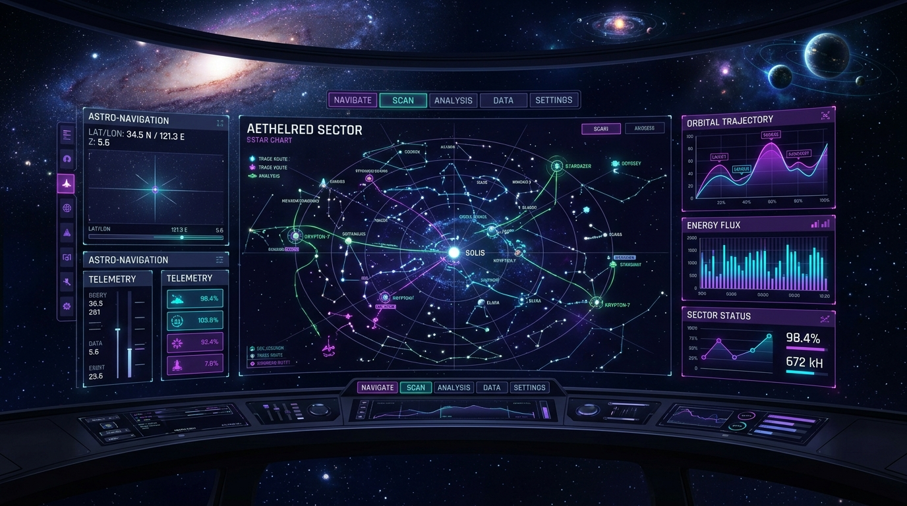
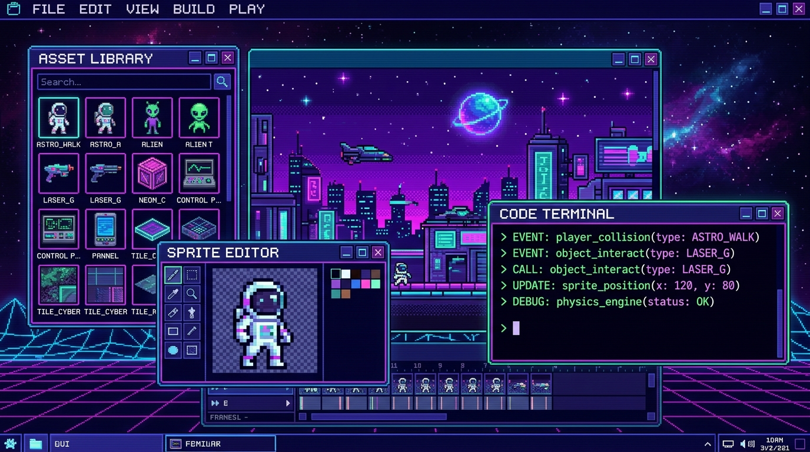
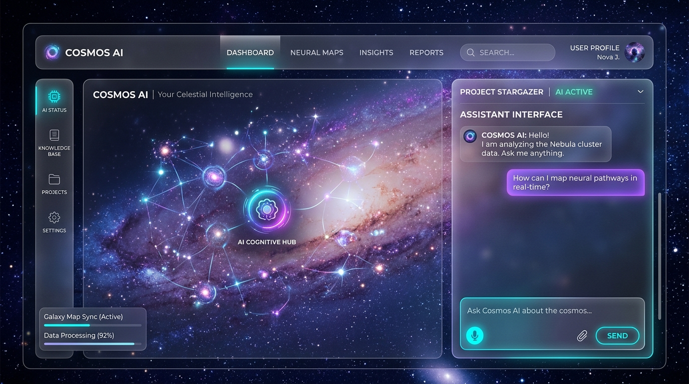

Hello, Star Traveler.
I am Dhanush K S.
Navigating the digital cosmos as a Full Stack Software Engineer. I engineer resilient distributed backends, ultra-fluid interfaces, and intelligent neural web systems.
About Me
Bridging computational engineering with immersive cosmic aesthetics.
I am a Software Engineer & Systems Architect passionate about building high-throughput, fault-tolerant web applications. With an insatiable curiosity for astronomical physics and cybernetic computing, I craft experiences that feel both delightfully nostalgic and fiercely futuristic.
Over the past 5+ years, I have architected low-latency microservices, scaled cloud telemetry pipelines handling millions of data points per minute, and designed pixel-perfect user interfaces that users love interacting with.
Personal Passions: Retro pixel art games, astrophotography, WebAssembly, compiling compilers, and continuous learning in neural AI workflows.
Core Competencies
High-caliber technical skills honed through rigorous real-world production environments.
Core Languages
Frameworks & Web
Cloud, DevOps & AI
Milestone Timeline
A chronological voyage of education, breakthrough projects, and engineering leadership.
Lead Cosmic Systems Architect
Nebula Labs Inc. • Remote
Spearheading distributed systems design for planetary-scale telemetry services. Mentoring 8 engineers, architected real-time WebSocket clustering, and slashed infrastructure latency by 42%.
Cosmos AI Engine Launch
Key Project Milestone
Architected and deployed "Cosmos AI", an autonomous knowledge mapping platform leveraging vector embeddings and multi-model agent networks to refactor legacy codebases autonomously.
Senior Full Stack Developer
Starlight Technologies
Engineered interactive dashboards with Three.js and React. Built robust GraphQL & REST APIs in Node.js and Go. Deployed resilient microservices onto Kubernetes clusters.
B.S. in Computer Science & Engineering
University of Space & Computational Science
Graduated with First Class Honors. Specialization in Distributed Operating Systems, Computer Graphics, and Artificial Intelligence. Built an open-source 2D pixel physics simulation engine as capstone.
Featured Projects
Click on any project thumbnail to launch an in-depth mission brief and architecture breakdown.

Aethelred Star Navigation
Cloud telemetry console streaming real-time orbital constellations and microservice latency data.

Pixel Synth Studio
In-browser 2D physics sandbox and sprite animator running at 60fps with WebAudio synth integration.

Cosmos AI Assistant
Autonomous knowledge agent mapping code logic into celestial neural networks with semantic search.
Developer Spotlight
Visual introduction exploring cosmic architecture, modern development paradigms, and system design.
Client & Peer Feedback
What engineering leaders, founders, and collaborators say about working with Danush.
Danush completely transformed our mission telemetry pipeline. Not only did our API latency drop by over 40%, but the UI he crafted felt like something out of a futuristic space console. A truly exceptional engineer.
Working with Danush was seamless. His deep understanding of TypeScript, WebGL, and microservices allowed us to hit our release milestones weeks ahead of schedule. Plus, his aesthetic eye is unmatched.
Rarely do you find an engineer who excels at both rock-solid backend infrastructure and mind-blowing interactive frontend experiences. Danush consistently exceeds expectations on every milestone.
Talk to Danush AI
Interact with an AI version of the portfolio owner. Ask questions about experience, tech stack, or collaboration.
CosmoBot • Danush AI
Active on Frequency 440MHzInitiate Contact
Have a mission in mind or want to collaborate on an interstellar web system? Send a transmission.